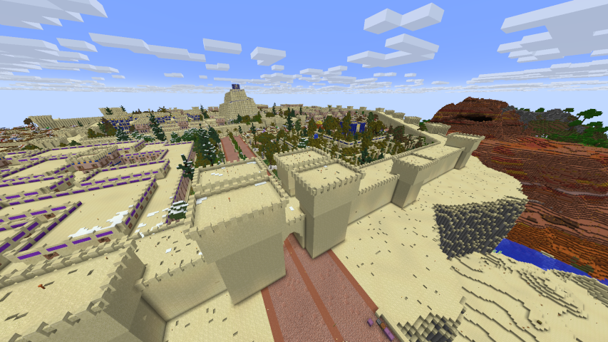

The original survival 2b2t world-download exhibit server
Minecraft 1.21.x

2b2tmuseum.org is a public survival Minecraft server running on Minecraft 1.21.4. The server is primarily intended to be a world-download exhibit server, preserving the history of 2b2t, however you can optionally play survival anarchy on the same world that the world-downloads are hosted on. 2b2tmuseum's survival features a vanilla experience with chat and server optimisation features on an infinite world with no protections outside of exhibit areas, or intention to reset the world. Upon logging in, you will be spawned in 2b2t's spawn, which was left unprotected for your enjoyment.
You can choose to play survival, escape spawn, and go further out. If you're not interested in playing survival, you can /warp to any of the available saved builds on 2b2tmuseum.org, or you can run /freecam (/fc for short) and fly around spawn with invincibility. At any time, you can run /fc again to restore your survival playerfile, allowing you to check out the builds on 2b2tmuseum without interrupting your progress in survival.
The IP to connect is 2b2tmuseum.org (port 25565)